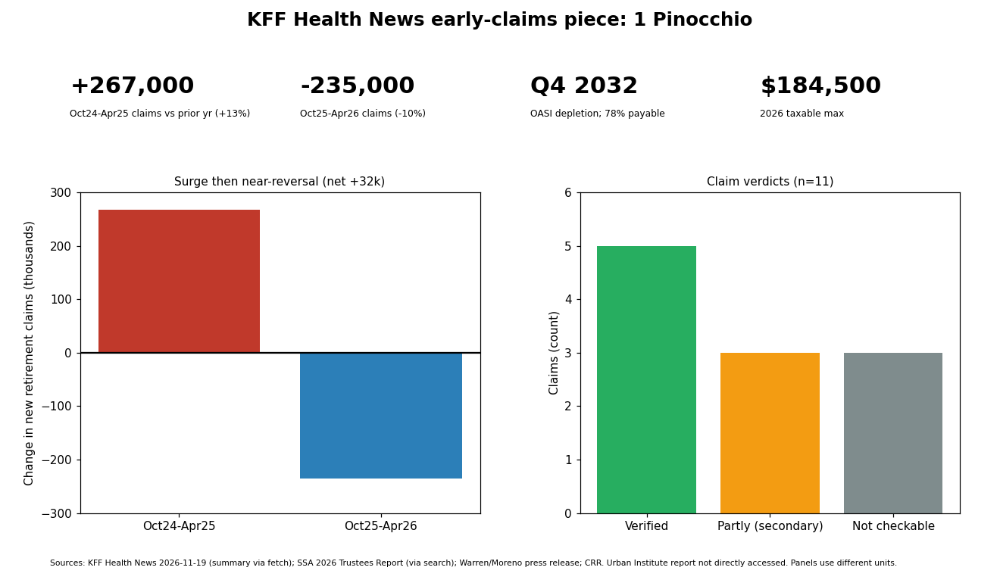

Mostly accurate: 1 Pinocchio for the KFF early-claims story

Findings
The numbers in the piece hold up where checkable: claims rose 267,000 (13%) Oct 2024-Apr 2025 and fell 235,000 (~10%) Oct 2025-Apr 2026; OASI depletion is Q4 2032 with 78% payable (up to 22% cut); the 2026 taxable maximum is $184,500; Warren and Moreno have outlined, not introduced, a cap-lifting plan.
- Materially misleading risk: attributing the surge to DOGE turmoil rests on Urban Institute's inference. SSA cites "peak 65", and the Social Security Fairness Act and high earners were also discussed. Other outlets give 276k, 15% or ~320k for the surge.
- Not checkable: Wettstein's "overwhelming" quote, Smalligan's "almost an exact reversal", SSA's non-response, CRR's 2019-2023 trend, the "one year earlier" effect size.
- Limits: article text came as a fetch summary; SSA site returned 403; Urban's report not accessed directly.
Sources
- https://kffhealthnews.org/aging/social-security-early-claims-spike-doge-new-old-age/
- https://www.ssa.gov/oact/TR/2026/II_A_highlights.html (403; via search)
- https://www.axios.com/2026/06/09/social-security-trust-fund-medicare
- https://www.axios.com/2025/06/04/social-security-benefits-retirement
- https://www.warren.senate.gov/newsroom/press-releases/warren-moreno-pen-nyt-op-ed-our-bipartisan-plan-to-save-social-security/
- https://crr.bc.edu/scary-headlines-drive-people-to-claim-social-security-earlier-and-that-has-real-consequences/
Confidence: medium (secondary sourcing for several figures).